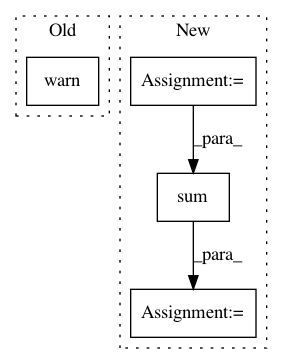

ed4b036702f46a57002b1fa946af84a9c822503e,librosa/filters.py,,window_bandwidth,#Any#Any#,722
Before Change
key = window
if key not in WINDOW_BANDWIDTHS:
warnings.warn("Unknown window function "{:s}".".format(key))
return WINDOW_BANDWIDTHS.get(key, default)
After Change
key = window
if key not in WINDOW_BANDWIDTHS:
win = get_window(window, n)
WINDOW_BANDWIDTHS[key] = np.sum(win**2) / np.sum(np.abs(win))**2
return WINDOW_BANDWIDTHS[key]
In pattern: SUPERPATTERN
Frequency: 3
Non-data size: 4
Instances
Project Name: librosa/librosa
Commit Name: ed4b036702f46a57002b1fa946af84a9c822503e
Time: 2016-10-03
Author: brian.mcfee@nyu.edu
File Name: librosa/filters.py
Class Name:
Method Name: window_bandwidth
Project Name: pyannote/pyannote-audio
Commit Name: 87a1afc00f6700d1fc33f4bb7a803229987c645b
Time: 2017-05-15
Author: bredin@limsi.fr
File Name: pyannote/audio/embedding/segmentation.py
Class Name: Segmentation
Method Name: apply
Project Name: automl/SMAC3
Commit Name: 3493897c7b0f2bee6f4b746d24d6b85377a08d6d
Time: 2016-02-29
Author: lindauer@informatik.uni-freiburg.de
File Name: smac/smbo/rf_with_instances.py
Class Name: RandomForestWithInstances
Method Name: predict